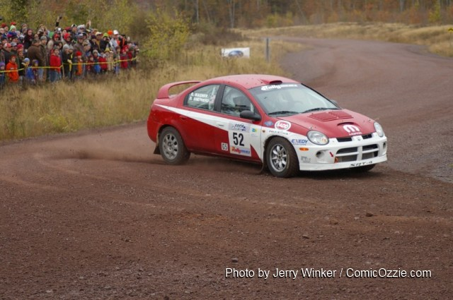

More than 20 two-wheel-drive rally cars will contest the final MaxAttack! round for 2010
Portland, OR (October 14, 2010) – The final round of the 2010 MaxAttack! Series, presented by the Danza del Sol winery, will roll into Houghton, Michigan on October 16. Sanctioned by Rally America, the Lake Superior Performance Rally will cover 90 racing miles that will test rally teams on a variety of road surfaces, in an event where constantly changing weather conditions can significantly alter the outcome of the event. An excellent field of more than twenty two-wheel-drive rally cars from nine different marques will make the finale one to remember.
The battle for the $1500 first-place check and maximum championship points will be a fierce one. American rally legend Doug Shepherd and co-driver Karen Wagner will have to be considered one of the favorites going into the event. Shepherd has entered this rally many times over the years, and has a high-horsepower Dodge Neon SRT-4 that seems well-suited to the Michigan roads. But to make matters interesting, Lauchlin O’Sullivan also has an SRT-4 at his disposal, and he and co-driver Scott Putnam will be duking it out with Shepherd. Eric Burmeister also has a great deal of Upper Peninsula rally experience. The Michigan Tech alumnus will once again be behind the wheel of his potent Mazdaspeed3 at this event, with co-driver Dave Shindle.
Making his first visit to Michigan will be Oregon speedster Cody Crane in a Honda CRX. While down on power to some of the turbocharged cars, the lighter and nimbler Honda may have some advantages under braking and turning. He and co-driver Billy Irvin almost won the Oregon Trail round of MaxAttack!, but late-rally mechanical problems slowed them down. Also entering from Oregon is the duo of Brian Gottlieb and Patrick Darrow. They finished fifth in Oregon in a Toyota FX-16, but that car burned to the ground this summer. They have replaced it with the Honda Civic in which Andrew Havas claimed the 2007 and 2008 Oregon Trail MaxAttack! wins. In another CRX, Chris and Lori O’Driscoll are making the drive from Colorado to try and improve on their Oregon Trail MaxAttack! finish. And in another Civic are Silas and Matt Himes, brothers of Jake Himes, one of the founders of MaxAttack! and in whose honor the championship trophy is named.
There are a number of other entrants that could place well at this event. Canadian brothers Jan and Jody Zedril are bringing their Mitsubishi Lancer south from Winnipeg, and they are no strangers to rallies in Minnesota and Michigan. The brothers have already clinched the Group 2 class championship in the Canadian national rally series. Chris Greenhouse always goes well at Lake Superior, he is teamed with Brian Johnson in a Plymouth Neon. Co-Driver Ben Slocum, who won the Oregon round of MaxAttack! with Dillon Van Way in a Ford Focus, has teamed with Mike Merbach in a Volkswagen Jetta for the Lake Superior rally.
Older and rear-wheel-drive cars are always popular with spectators, and no exception is the 1970 VW Beetle of brothers Mark and John Huebbe from Missouri. Jim Scray and Colin Vickman are competing in a 1972 Datsun 510, and Lake Superior veterans Colin McCleery and Jimmy Brandt have teamed up in a 1985 Ford Sierra (Merkur XR4ti in the United States). Rotary is represented by the Mazda RX-7 of locals Mychal Summers and RyanDesLaurier, who run their Mazda RX-7 out of L’Anse, Michigan, where the first service stops will take place. The sole truck entered in the event is the Chevrolet S10 of Jim Cox and Dan Drury, from Minnesota.
The 2010 MaxAttack! series champion and prestigious Jake Himes Cup winner will be decided in a spectacular “Shootout” fashion at this event. The series points structure is such that the Lake Superior Round is weighted heavier than the qualifying events, so it is virtually impossible to win the championship without attending this rally. Lauchlin O’Sullivan, having won the New England Forest qualifying event in July, would have to be considered the favorite to repeat as series champion. Cody Crane, by virtue of his second-place finish in Oregon, is also among the favorites. This will be his first event outside the Pacific Northwest, so the learning curve may be steep, but he has demonstrated speed on a variety of roads. Eric Burmeister finished third in New England, and will definitely have his Mazdaspeed3 in with a chance of taking his second MaxAttack! crown. Other entrants with a mathematical chance of winning the Jake Himes Cup are Brian Gottlieb and Chris O’Driscoll, both of whom entered the Oregon Trail rally in May.
The 2010 MaxAttack! Rally Series Presented by Danza del Sol consists of three events, which are:
• Oregon Trail, May 14-16, Portland, The Dalles, and Dufur, OR, http://www.oregontrailrally.com
• New England Forest Rally, July 16-17, Bethel, ME, http://www.newenglandforestrally.com
• Lake Superior Performance Rally, October 16-17, Houghton, MI, http://www.lsprorally.com
Oregon Trail and the New England Forest Rally will be the qualifying events for the Jake Himes Cup, and the Lake Superior Performance Rally will be the central Shootout event.
Each event will feature a $5,000 prize fund to be distributed among the top two-wheel-drive teams, as well as a season championship. For more information about the MaxAttack! Series and the Rallysports Group of America, please visit http://www.max-attack.com.
About Danza del Sol Winery
Nestled in the rolling hills of the beautiful Temecula Wine Valley, Danza Del Sol Winery is a thirty-five acre estate winery located in Southern California’s Wine Country. While Danza Del Sol’s tasting room officially opened in February 2010, the winery itself already has a remarkable history. The estate was previously owned by Dr. William Filsinger and his late wife Katharine, who provided the Temecula Wine Valley with exceptional wines for nearly 30 years. Danza Del Sol is dedicated to producing a unique range of premium varietal and proprietary blended wines that are sure to exceed your expectations, at affordable prices. For more information, please visit http://danzadelsol.com/.
About Rallysports Group of America
Rallysports Group of America, Inc. (RSGA) was formed as an organization in 2006 to advance the sport of performance stage rally in the United States. By providing education on performance driving, car preparation and safety, and by fostering the growth of meaningful competition, RSGA seeks to provide a sustainable and competitive arena for the advancement of North American performance rally that promotes increased value for rally competitors, organizers, and sponsors alike. For more information, please visit http://www.max-attack.com.
About Rally America, Inc.
Based in Golden Valley, Minn., Rally America sanctions the premier rally racing series in the United States, the Rally America National Championship Series. In 2010, Rally America will conduct six National Championship events at venues across the country, from Olympia, Wash., to Bethel, Maine. Rally America competitors reach speeds well over 100 mph in modified street cars on natural-terrain courses of gravel, dirt or snow. In the Fall of 2010, Rally America will also introduce European-style wheel-to-wheel rally cross to North America. For more information regarding Rally America, Inc., the 2010 Rally America National Rally Championship or the new European-style rally cross events taking place at the New Jersey Motor Sports Park in the fall of 2010, please visit www.rally-america.com.
Mandatory Photo Credit: Doug Shepherd and Karen Wagner in their Dodge SRT-4 at the 2009 Lake Superior Rally. Photo by Jerry Winker.
--30—
Additional photos available upon request.